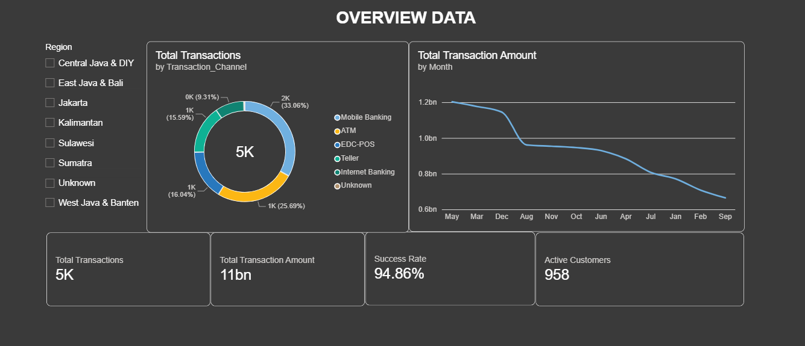
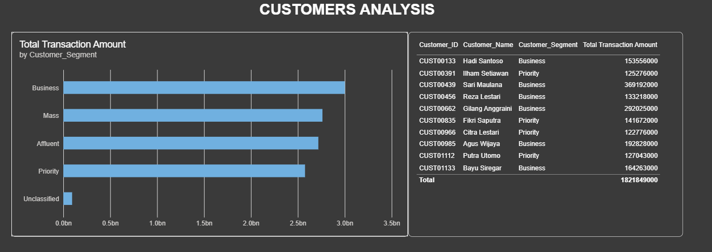
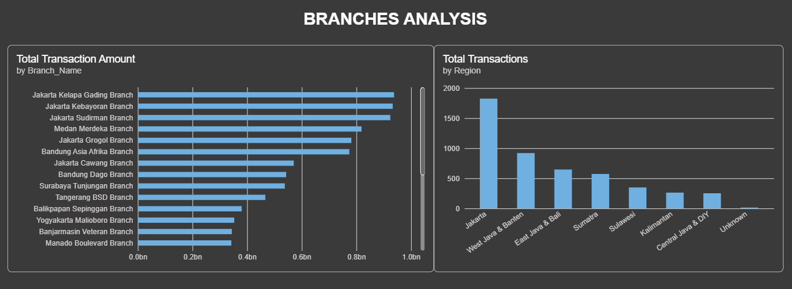

How it Made?
As a self-initiated project to build my Data Analyst portfolio for industry field, I developed an end-to-end transaction analysis using a synthetic dataset. The dataset contains 5,000 transaction records, 1,200 customers, and 25 branches, intentionally filled with messy data such as duplicates, blank cells, inconsistent text, mixed date formats, and invalid amounts to simulate raw data from a real banking system.
Cleaned and validated the raw data in Excel using TRIM, CLEAN, IFS, and XLOOKUP, then built the KPIs with COUNTIFS and SUMIFS and summarized the results with PivotTables and PivotCharts. After the cleaning process, 4,843 valid transactions remained. The cleaned data was then loaded into Power BI and modeled as a star schema, with Customers and Branches connected to Transactions plus a date table. Using DAX measures, I built a three-page dashboard covering overview, customers, and branches. The totals from Excel and Power BI were reconciled and matched.

Technologies Used
The dashboard shows 4,843 valid transactions with a 94.86% success rate and a total successful transaction value of Rp 11.15 billion across 958 active customers. Mobile Banking is the most used channel with 33.1% of all transactions, while Teller carries the highest value at 35.4%, with an average of Rp 5.49 million per transaction compared to Rp 1.80 million on mobile. The share of Mobile Banking also grew from 25.0% in the first quarter to 40.2% in the last quarter.

The customer analysis found that Mass customers make 54.7% of all transactions but only 24.8% of the value, while Business customers make 9.7% of transactions but contribute the largest share of value at 26.9%. The top 10% of active customers account for 56.7% of the total value, and all of the top 10 customers come from the Business and Priority segments. This shows that the value is concentrated in a small group of customers.

For the branches, Jakarta contributes 37.2% of the total value. The Kelapa Gading, Kebayoran, and Sudirman branches lead with similar totals of around Rp 0.92 to 0.94 billion, and Medan Merdeka is the strongest branch outside Jakarta. The overall failure rate is 3.2%, with a spike in Mobile Banking failures in July (9.4%) that is worth investigating further.
Because the dataset is synthetic, these patterns do not represent a real bank, and the possible explanations behind them are hypotheses that still need to be tested. The main goal of this project is to practice a complete analyst workflow: cleaning raw data, defining KPIs, building a data model, and communicating insights through a dashboard.
Project Files
The Excel workbook contains the cleaning process, KPI summary, and PivotTables used in this analysis.